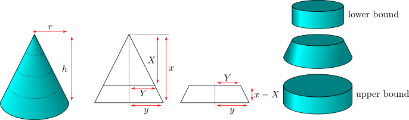

Example 4.1.7. Volume of a cone.
We know (especially if one has revised the material in the appendix and Appendix B.5.2 in particular) that the volume of a right-circular cone is
\begin{align*}
V &= \frac{\pi}{3} r^2h
\end{align*}
where \(h\) is the height of the cone and \(r\) is the radius of its base. Now, the derivation of this formula given in Appendix B.5.2 is not too simple. We present an alternate proof here that uses antiderivatives.

Consider cutting off a portion of the cone so that its new height is \(x\) (rather than \(h\)). Call the volume of the resulting smaller cone \(V(x)\text{.}\) We are going to determine \(V(x)\) for all \(x\ge 0\text{,}\) including \(x=h\text{,}\) by first evaluating \(V'(x)\) and \(V(0)\) (which is obviously \(0\)).
Call the radius of the base of the new smaller cone \(y\) (rather than \(r\)). By similar triangles we know that
\begin{align*}
\frac{r}{h} &= \frac{y}{x}.
\end{align*}
Now keep \(x\) and \(y\) fixed and consider cutting off a little more of the cone so its height is \(X\text{.}\) When we do so, the radius of the base changes from \(y\) to \(Y\) and again by similar triangles we know that
\begin{align*}
\frac{Y}{X} &= \frac{y}{x} = \frac{r}{h}
\end{align*}
The change in volume is then
\begin{gather*}
V(x) - V(X)
\end{gather*}
Of course if we knew the formula for the volume of a cone, then we could compute the above exactly. However, even without knowing the volume of a cone, it is easy to derive upper and lower bounds on this quantity. The piece removed has bottom radius \(y\) and top radius \(Y\text{.}\) Hence its volume is bounded above and below by the cylinders of height \(x-X\) and with radius \(y\) and \(Y\) respectively. Hence
\begin{align*}
\pi Y^2 (x-X) & \leq V(x)-V(X) \leq \pi y^2 (x-X)
\end{align*}
since the volume of a cylinder is just the area of its base times its height. Now massage this expression a little
\begin{align*}
\pi Y^2 & \leq \frac{V(x)-V(X)}{x-X} \leq \pi y^2
\end{align*}
The middle term now looks like a derivative; all we need to do is take the limit as \(X \to x\text{:}\)
\begin{align*}
\lim_{X\to x} \pi Y^2 & \leq \lim_{X\to x} \frac{V(x)-V(X)}{x-X} \leq
\lim_{X\to x} \pi y^2
\end{align*}
The rightmost term is independent of \(X\) and so is just \(\pi y^2\text{.}\) In the leftmost term, as \(X \to x\text{,}\) we must have that \(Y \to y\text{.}\) Hence the leftmost term is just \(\pi y^2\text{.}\) Then by the squeeze theorem (Theorem 1.4.18) we know that
\begin{align*}
\diff{V}{x} = \lim_{X\to x} \frac{V(x)-V(X)}{x-X} &= \pi y^2.
\end{align*}
But we know that
\begin{align*}
y &= \frac{r}{h} \cdot x
\end{align*}
so
\begin{align*}
\diff{V}{x} &= \pi \left( \frac{r}{h} \right)^2 x^2
\end{align*}
Now we can antidifferentiate to get back to \(V\text{:}\)
\begin{align*}
V(x) &= \frac{\pi}{3} \left( \frac{r}{h} \right)^2 x^3 + c
\end{align*}
To determine \(c\) notice that when \(x=0\) the volume of the cone is just zero and so \(c=0\text{.}\) Thus
\begin{align*}
V(x) &= \frac{\pi}{3} \left( \frac{r}{h} \right)^2 x^3
\end{align*}
and so when \(x=h\) we are left with
\begin{align*}
V(h) &= \frac{\pi}{3} \left( \frac{r}{h} \right)^2 h^3 = \frac{\pi}{3} r^2 h
\end{align*}
as required.